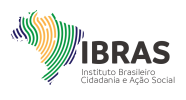

Instituto Brasileiro Cidadania e Ação Social
Home
O IBRAS
O que fazemos
Doações
Projetos
Editais
Serviços
Contato
Projetos
- ATESTADO CAPACIDADE TÉCNICA_AQUATRO_BACIA DE OLINDA E JANGA_COMPESA PE.pdf
- ATESTADO CAPACIDADE TÉCNICA_AQUATRO_PT INCRA PE.pdf
- ATESTADO DE CAPACIDADE TECNICA PROJETO DE PESCA SUSTENTAVEL MARANHAÃO_UNESCO_SNJ_AVAJU.pdf
- ATESTADO DE CAPACIDADE TECNICA PROJETO IDJOVEM _ SNJ_AVAJU.pdf
- ATESTADO DE CAPACIDADE TECNICA PROJETO INOVA JOVEM_AVAJU.pdf
- Atestado_Sara Vida_Capacitação INCLUSAO DIGITAL_GASTRO_EMPREENDEDORISMO.pdf
- Atestado_Sara Vida_ESPORTE NA PREVENÇÃO DO USO DE DROGAS.pdf
- Certificado de Capacidade técnica_ANDEAJA_JOAQUIM PASSARINHO_PA.pdf
- Certificado de Capacidade técnica_ANDEAJA_VAVA_PA.pdf
- CERTIFICADO DE SERVIÇO PRESTADO E CAPACIDADE TÉCNICA_AJACDEVI_COM IBRAS_APRENDIZ INTEGRADO.pdf
- CERTIFICADO DE SERVIÇO PRESTADO E CAPACIDADE TÉCNICA_AJACDEVI_COM IBRAS_SUPERAÇÃO.pdf
- Declaração DA CONFIARR_PARA IBRAS_AQUI TEM GOVERNO_CIDADES GOV RR.pdf
- Declaração DA CONFIARR_PARA IBRAS_COLO DE MAE_COSTURANDO E PROTEGENDO_GOV RR.pdf
- Declaração DA CONFIARR_PARA IBRAS_COPA CABURAÍ DE JIU-JITSU_BVB RR.pdf
- Declaração DA CONFIARR_PARA IBRAS_EXTENSÃO RURAL_IGARAPÉS E MANANCIAIS.pdf
- DECLARAÇÂO DE SERVIÇO_IBART_CANTO EM CADA CANTO_.pdf
- DECLARAÇÃO_VI Bienal de Jovens Criadores da CPLP - Política de Juventude e Cultura Livre.pdf